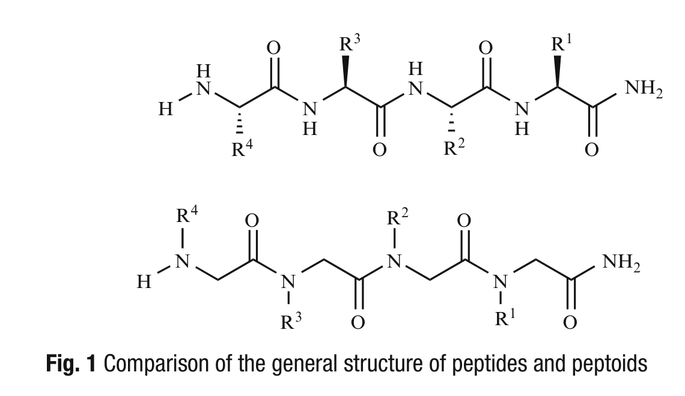
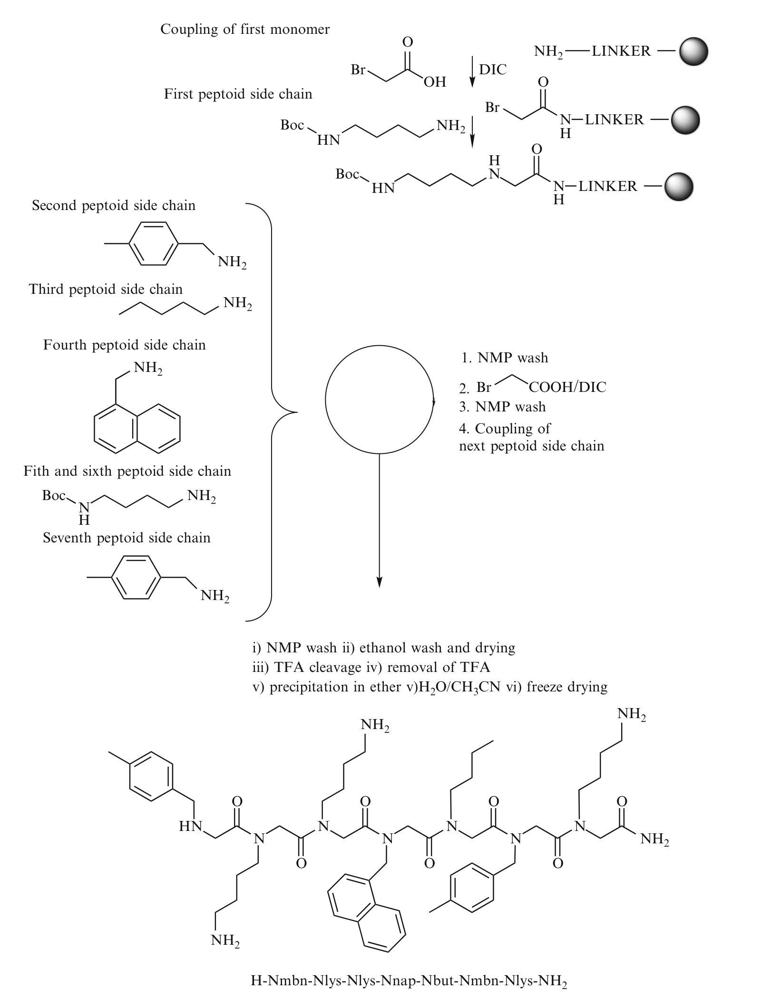

Chapter 11: Synthesis of Antimicrobial Peptoids 抗菌肽类似物（Peptoids）的合成
学习笔记 —— 翻译级详细整理
原著：Methods in Molecular Biology - Peptide Synthesis and Applications (2013, Humana)
章节作者：Paul R. Hansen and Jens K. Munk
Peptoids（N-substituted glycines，N-取代甘氨酸）是α-peptides（α-肽）的模拟物（mimics），其侧链（side chains）连接在主链的Nα-amide nitrogen（Nα-酰胺氮）上，而非Cα-atom（Cα原子）上。Peptoids作为治疗药物（therapeutics）具有广阔的前景，因为它们通常能保留母体肽（parent peptide）的生物活性（biological activity），并且对蛋白酶（proteases）具有稳定性。近年来，peptoids作为对抗多重耐药细菌（multiresistant bacteria）的新型潜在抗生素（antibiotics）引起了广泛关注。
本章描述了通过submonomer solid-phase synthesis（亚单体固相合成）方法合成一个抗菌peptoid——H-Nmbn-Nlys-Nlys-Nnap-Nbut-Nmbn-Nlys-NH₂的完整流程。
关键词 (Key words): Peptoids, N-substituted glycines, Submonomer solid-phase synthesis, Antimicrobial peptides
Peptoids是α-peptides的结构模拟物，侧链连接在主链氮原子上而非Cα原子上
Peptoids保留母体肽生物活性，且对蛋白酶稳定
本章描述的是submonomer（亚单体）固相合成方法
目标产物：H-Nmbn-Nlys-Nlys-Nnap-Nbut-Nmbn-Nlys-NH₂，具有抗革兰氏阳性和阴性菌活性
Peptoids是N-substituted glycines（N-取代甘氨酸）的寡聚体（oligomers）[1]。它们是α-peptides的模拟物，其侧链连接在主链的Nα-amide nitrogen（Nα-酰胺氮原子）上，而非Cα-atom（Cα原子）上（Figure 1）。Peptoids是非手性的（achiral），并采取与peptides不同的构象（conformations）；然而，它们保留了peptides的整体性质[2]。Peptoids作为治疗药物具有广阔前景，因为它们通常能保留母体肽的生物活性，并且对蛋白酶具有稳定性[3]。

Figure 1. Peptides与Peptoids的一般结构比较（Comparison of the general structure of peptides and peptoids）
Peptoids已被用于研究多种生物过程，包括：
细胞摄取与递送（cellular uptake and delivery）[4]
GPCR配体（ligands for GPCRs）[5]
蛋白质-蛋白质相互作用（protein–protein interactions）[6]
蛋白酶抑制剂（protease inhibitors）[7]
钙通道阻滞剂（calcium channel blockers）[8]
最近，Lee和Zuckermann成功地将peptoid残基通过基因工程与化学合成相结合的方法，在特定位置引入了牛胰核糖核酸酶A（bovine pancreatic ribonuclease A）中[9]。此外，Chen及其合作者报道了一种扩展的多聚谷氨酰胺结合peptoid（expanded polyglutamine-binding peptoid），作为治疗亨廷顿舞蹈症（Huntington's disease）的新型治疗剂[10]。
此外，多种具有有趣性质的peptoid偶联物（peptoid conjugates）也已被报道，包括lipitoids [11]、glycopeptoids（糖肽类似物）[12]和carboxyalkyl peptoid PNAs [13]。关于peptoids的近期综述，见参考文献14–18。
抗菌肽（Antimicrobial peptides）是先天免疫（innate immunity）的重要组成部分。它们作为抵御入侵病原体的第一道防线（first line of defense），能杀死广谱的致病微生物，包括革兰氏阳性菌（Gram-positive bacteria）、革兰氏阴性菌（Gram-negative bacteria）和真菌（fungi）[19]。与靶向细胞壁合成、蛋白质合成、代谢或转录/复制的传统抗生素不同，大多数抗菌肽通过破坏细菌膜（disrupting the bacterial membrane）发挥作用。然而，其确切机制尚未完全阐明。
近年来，peptoid研究聚焦于开发新型基于peptoid的抗菌剂，主要策略包括：
从头设计（de novo design）[20–24]
环状peptoids（cyclic peptoids）[25]
化合物库筛选（libraries）[26, 27]
将天然抗菌肽转化为peptoid类似物（transforming naturally occurring antimicrobial peptides into peptoid analogs）[28]
目前文献报道了四种peptoid的固相合成（solid-phase synthesis）方法：
(i) 单体法（Monomer approach）：合成并表征N-substituted glycine构建单元（building blocks），然后顺序偶联[1]。
(ii) 还原烷基化法（Reductive alkylation）：用适当的醛（aldehyde）或酮（ketone）对glycine进行还原烷基化，获得所需的Nα-烷基化glycine衍生物[29]。
(iii) 光刻法（Photolithographic approach）：利用光刻技术合成peptoids [30]。
(iv) 亚单体法（Submonomer approach）：目前最广泛使用的方法[31]。
本章仅详细描述亚单体法（submonomer approach），因为它是迄今为止最常用的方法。
在亚单体法中，peptoids从C端到N端（from C to N terminus）在Rink amide linker resin（Rink酰胺连接树脂）上合成，使用一个两步偶联循环（two-step coupling cycle）（Figure 2）。
合成循环的步骤如下：
第一步——酰化（Acylation step）：DIC介导的溴乙酸（bromoacetic acid）与树脂的偶联反应。
第二步——亲核取代（Sₙ2 displacement）：一级胺（primary amine）通过Sₙ2-亲核取代反应置换溴原子。
重复此循环直至获得目标化合物。然后用95%含水TFA（aqueous TFA）将peptoid从树脂上切割。蒸发除去TFA后，沉淀（precipitate）并冻干（lyophilize）peptoid。最后，通过色谱-质谱联用（chromatography combined with mass spectrometry），如LC-MS或分析型HPLC和MALDI-TOF-MS，验证产物的身份。

Figure 2. H-Nmbn-Nlys-Nlys-Nnap-Nbut-Nmbn-Nlys-NH₂的亚单体合成路线图 （Submonomer synthesis scheme） 缩写：Bu = butyl（丁基）, lys = 4-aminobutyl（4-氨基丁基）, mbn = 4-methylbenzyl（4-甲基苄基）, nap = 1-napthylmethyl（1-萘甲基）, DIC = N',N-diisopropylcarbodiimide, NMP = N-Methyl-2-pyrrolidone
Peptoids也可通过NMR光谱（NMR spectroscopy）进行表征[32]。然而，它们在较长链长时是复杂的体系，因为peptoids主链酰胺键的顺式（cis）和反式（trans）构象都可以显著存在[33]。
使用亚单体法已成功合成含有最多50个残基（residues）的peptoids，产率合理[17]。peptoid合成已使用多种仪器平台，包括：
配备烧结过滤器（fritted filter）的注射器手动合成（manual synthesis in syringes）[21]
自动肽合成仪（automated peptide synthesizers）[28]
自动化微波肽合成仪（automated microwave peptide synthesizers）[12]
平行合成仪（parallel synthesizers）[34]
大多数一级胺（primary amines）适用于peptoid合成。如果胺带有侧链官能团（side-chain functionality），如羧酸（carboxylic acid）、胺（amine）、硫醇（thiol）和/或杂环化合物（heterocyclic compound），则需要保护。Culf和Ouellette的综述[15]列出了已成功用于peptoid合成的多种胺。
已报道三种副反应（side reactions）：
副反应一：N-取代的二酮哌嗪（N-substituted diketopiperazines）：形成环状二聚体而非线性二聚体。属于此类的化合物包括2-methoxyethylamine和2-phenylethylamine [27]。
副反应二：分子内亲核取代：在距氨基三或四个原子处带有亲核基团的N-取代甘氨酸可能与主链溴乙酰基（bromoacetyl group）反应。此类化合物包括4-(2-aminoethyl)morpholine和NIm-tritylhistamine [35]。
副反应三：TFA不稳定性：某些亚单体对TFA切割不稳定[15]，包括p-methoxy α-methylbenzylamine、2,4,6-trimethoxybenzylamine、p-guanidino α-methylbenzylamine和p-guanidinophenylethylamine。
Peptoids是非手性寡聚物，侧链在N原子而非Cα上
四种固相合成方法：单体法、还原烷基化法、光刻法、亚单体法
亚单体法最常用：DIC介导溴乙酸偶联 + 一级胺Sₙ2取代，两步循环
已合成最多50个残基的peptoids
三类副反应需注意：diketopiperazine形成、分子内亲核取代、TFA不稳定性
大多数一级胺可直接使用，带侧链官能团的需保护
本章列出了submonomer固相合成抗菌peptoid所需的全部材料与试剂。
注射器（Syringe） — 5 mL，配备塞子（stopper）和PTFE过滤器（PTFE filter）（见Notes 1–3）。
TentaGel R RAM resin — loading（载量）= 0.18 mmol/g。
真空装置（Vacuum device） — 配备液体收集器（liquid collection reservoir），可安装在注射器尖端，最好配有阀门以便快速连接和断开。
NMP（N-methyl-2-pyrrolidone） — 作为主要溶剂。
Piperidine（哌啶） — 用于Fmoc脱保护。
Bromoacetic acid（溴乙酸） — 酰化步骤试剂。
DIC（Diisopropylcarbodiimide，二异丙基碳二亚胺） — 偶联试剂。
Lab shaker（实验室振荡器） — 用于反应振荡。
Butylamine（丁胺） — 疏水性peptoid侧链构建单元。
N-Boc-1,4-butandiamine（N-Boc-1,4-丁二胺） — 阳离子peptoid侧链构建单元，提供Nlys残基。
4-Methylbenzylamine（4-甲基苄胺） — 疏水性peptoid侧链构建单元，提供Nmbn残基。
1-Napthylmethylamine（1-萘甲胺） — 疏水性peptoid侧链构建单元，提供Nnap残基。
Acetic acid（乙酸）
Ethanol（乙醇） — 用于洗涤树脂。
Diethyl ether（乙醚） — 用于沉淀peptoid产物。
TFA（Trifluoroacetic acid，三氟乙酸） — 切割试剂。
TFA:H₂O 95:5 — 切割液（见Note 4）。
现配溶液（Prepare fresh solutions daily） — 0.6 M溴乙酸/NMP：将0.83 g溴乙酸溶于10 mL NMP中；3.2 M DIC/NMP：将500 μL DIC溶于500 μL NMP中。
核心树脂：TentaGel R RAM（0.18 mmol/g载量）
主要溶剂：NMP（N-methyl-2-pyrrolidone）
偶联试剂：DIC + 溴乙酸（现配溶液）
四种胺单体：butylamine（Nbut）、N-Boc-1,4-butandiamine（Nlys）、4-methylbenzylamine（Nmbn）、1-napthylmethylamine（Nnap）
切割体系：TFA:H₂O (95:5)
关键设备：5 mL注射器 + PTFE滤板 + 真空装置
为克服前文讨论的peptides较差的药学性质，研究者们聚焦于肽主链的化学修饰。通过引入非蛋白原氨基酸（non-proteinogenic amino acids），如N-substituted glycines，可以改善生物半衰期（biological lifetime）并稳定二级结构（secondary structures）。
本章描述了一个具有抗革兰氏阳性和阴性菌活性的peptoid——H-Nmbn-Nlys-Nlys-Nnap-Nbut-Nmbn-Nlys-NH₂的设计与合成（Figure 2）。由于大多数抗菌肽是阳离子两亲性的（cationic and amphipathic），我们设计了该peptoid使其具有阳离子和疏水性N-取代残基的均匀分布。
选择butylamine作为阳离子peptoid残基，因为掺入后形成的N-(4-aminobutyl)glycyl残基（Nlys）类似于赖氨酸（lysine）残基
已证明在peptoids中引入Nlys可以降低溶血活性（hemolytic activity）[2]
含Nlys的peptoids比相应的Narg衍生物更易合成——后者需要额外的合成步骤[36]
选择butylamine、4-methylbenzylamine和1-napthylmethylamine作为疏水构建单元，因为已证明含有这些构建单元的peptoids可能显示抗菌活性[21]
步骤：
取出注射器活塞（plunger/piston），插入PTFE过滤器。用活塞将过滤器推至注射器底部。确保过滤器紧密贴合，然后再次取出活塞。
将树脂加入注射器，连接真空装置，保持注射器直立。
用NMP短暂洗涤（1 × 4 mL），利用真空装置排干NMP。
断开真空，保持注射器直立，加入NMP（约4 mL）。
让树脂溶胀（swell）至少30分钟，最好过夜。
使用前需将PTFE过滤器紧密安装到注射器底部
树脂需在NMP中充分溶胀≥30 min（最好过夜）
所有排液步骤通过真空装置完成
步骤：
排干NMP，断开真空。
加入20% piperidine/NMP（v/v）（2 mL）以脱除Fmoc保护基。
3分钟后，排干piperidine溶液，断开真空。
用NMP短暂洗涤（1 × 2 mL），使用真空。
再次加入20% piperidine/NMP（v/v）（2 mL），放置7分钟，然后排干。
用NMP充分洗涤（2 × 2 mL，然后8 × 4 mL），使用真空。
两步脱保护：先3 min短脱，再7 min长脱
总洗涤量：2 × 2 mL + 8 × 4 mL NMP，确保piperidine彻底去除
使用20% piperidine/NMP (v/v)作为Fmoc脱保护液
这是peptoid合成的核心步骤，包含酰化（acylation）和亲核取代（displacement）两个子步骤的循环。
步骤：
将活塞重新插入注射器，置于树脂正上方。
酰化步骤（Acylation step）：对于250 mg TentaGel R RAM（loading = 0.18 mmol/g），在Eppendorf管中混合750 μL预配的0.6 M溴乙酸/NMP和150 μL预配的3.2 M DIC/NMP。让混合物反应3分钟。
通过将注射器尖端浸入酰化混合液中并拉动活塞，将酰化混合液吸入注射器。确保树脂完全浸没。如有需要，加入最少体积的NMP。
用塞子密封注射器尖端，在摇床（shaking table）上室温振荡30分钟。
取下塞子和活塞，重新连接真空。用NMP冲洗活塞，并用真空排干注射器。
用NMP短暂洗涤（2 × 4 mL），使用真空。
重复步骤1–6（即进行第二次溴乙酸/DIC偶联）。
将活塞重新插入树脂正上方。
亲核取代步骤（Displacement step）：加入一级胺（primary amine）置换溴化物。对于250 mg TentaGel R RAM，使用1 mmol胺溶于1 mL NMP。用活塞将胺溶液转移至注射器。确保树脂完全浸没。如有需要，加入最少体积的NMP。
用塞子密封注射器尖端，在lab shaker上室温振荡2小时。
取下塞子和活塞，用NMP冲洗活塞，重新连接真空，然后排干。
用NMP充分洗涤（6 × 4 mL），使用真空。
重复步骤1–12以延长peptoid链。
在最后一次亲核取代反应后，用NMP（3 × 4 mL）然后乙醇（3 × 4 mL）充分洗涤。
将活塞重新插入注射器。
通过冻干（lyophilization）或将注射器置于真空中至少1小时（最好过夜）来干燥残留乙醇。
偶联循环关键参数总结：
| 参数 (Parameter) | 数值/条件 (Value/Condition) |
|---|---|
| 溴乙酸浓度 | 0.6 M in NMP（750 μL） |
| DIC浓度 | 3.2 M in NMP（150 μL） |
| 酰化反应时间 | 30 min × 2次（室温，摇床振荡） |
| 胺取代反应 | 1 mmol胺 / 1 mL NMP，2小时，室温 |
每个循环 = 双酰化（2×溴乙酸/DIC，各30 min） + 胺取代（2小时）
每次酰化后需洗涤，每次取代后需6×4 mL NMP充分洗涤
每残基需要1 mmol胺 / 1 mL NMP
链延长后需用NMP和乙醇依次洗涤，再彻底干燥
合成完成后，需要将peptoid从树脂上切割下来，并同时脱除侧链保护基。
步骤：
将注射器直立放置并用塞子密封。
转移TFA:H₂O (95:5)（3 mL）至树脂上，用parafilm（封口膜）包裹，以切割peptoid并同时脱除侧链保护基。
2小时后，将注射器放入cryotube（冷冻管）中，小心取下parafilm和塞子。
使液体从注射器中流出并收集洗脱液（eluate）。
用TFA:H₂O (95:5)（3–4 mL）洗涤树脂，收集洗脱液。
用柔和的N₂气流蒸发大部分合并的洗脱液。
当剩余几百微升液体时，加入乙醚（diethyl ether, 5 mL）沉淀peptoid。
短暂摇动并静置10分钟。
在1,400 × g离心5分钟，弃去上清液（supernatant）。
加入乙醚（5 mL）洗涤peptoid。
重复步骤8–10。
将样品在通风橱（fume hood）中开放放置过夜，使残留乙醚挥发。
将粗产物（crude product）重新溶于CH₃CN/H₂O (1:1)中。
冻干（Lyophilize）。
重复步骤13和14，通常得到白色蓬松粉末（white fluffy powder）。注意：产物将以TFA盐形式获得。
通过LC-MS或MALDI-TOF-MS和HPLC分析产物。
分析型HPLC (Analytical HPLC)：
使用Phenomenex C₁₂反相柱（reversed phase column），Waters 600E系统，配备Empower软件（Waters, Milford, MA, USA）。流速1.5 mL/min，起始溶剂为0.1%含水TFA（buffer A），20分钟内升至0.1% TFA的CH₃CN/H₂O (7:1)，然后在10分钟内升至0.1% TFA的CH₃CN/H₂O (9:1)（buffer B），检测波长220 nm。
制备型HPLC (Preparative HPLC)：
使用Vydac C₁₈反相柱。流速1 mL/min起始，起始为buffer A/buffer B (9:1)持续10分钟，然后在60分钟内升至buffer A/buffer B (4:6)，最后在额外8分钟内升至buffer B。制备流速4 mL/min，检测波长220 nm。
MALDI-TOF质谱 (MALDI-TOF-MS)：
使用Bruker Flex仪器，α-cyano-p-hydroxycinnamic acid作为基质（matrix），采用肽标准品校准（peptide standard calibration）。
切割试剂：TFA:H₂O (95:5)，3 mL，反应2小时
产物用乙醚沉淀，离心收集，乙醚洗涤两次
冻干后得到白色蓬松粉末（TFA盐形式）
分析工具：LC-MS / MALDI-TOF-MS + 分析型/制备型HPLC
HPLC检测波长：220 nm
Note 1：每个合成使用一个注射器，最好带橡胶垫圈（rubber gasket）。对于约250 mg树脂，使用5 mL注射器。
Note 2：建议使用200 μL移液器吸头（pipette tip），切开后套在注射器尖端上并熔化封闭。
Note 3：PTFE过滤器用打孔器（punch）制备，应紧密贴合适配注射器，防止排干溶剂时树脂漏出。
Note 4：TFA具有高毒性（highly toxic）、易挥发（volatile）等特性，操作时需格外小心。
本工作作为DanCARD（Danish Center for Antibiotic Research and Development，丹麦抗生素研究与发展中心）的一部分完成，由The Danish Council for Strategic Research（丹麦战略研究委员会）资助（grant no. 09-067075）。
[1] Simon RJ, Kania RS, Zuckermann RN et al (1992) Peptoids: a modular approach to drug discovery. Proc Natl Acad Sci USA 89:9367–9371
[2] Patch JA, Kirshenbaum K, Seurynck S et al (2004) Versatile oligo(N-substituted) glycines: the many roles of peptoids in drug discovery. In: Neilsen PE (ed) Pseudo-peptides in drug development. Wiley-VCH Verlag GmbH & Co. KGaA, Weinheim, pp 1–31
[3] Zuckermann RN, Kodadek T (2009) Peptoids as potential therapeutics. Curr Opin Mol Ther 11:299–307
[4] Murphy JE, Uno T, Hamer JD et al (1998) A combinatorial approach to the discovery of efficient cationic peptoid reagents for gene delivery. Proc Natl Acad Sci USA 95:1517–1522
[5] Zuckermann RN, Martin EJ, Spellmeyer DC et al (1994) Discovery of nanomolar ligands for 7-transmembrane G-protein-coupled receptors from a diverse N-(substituted) glycine peptoid library. J Med Chem 37:2678–2685
[6] Nguyen JT, Turck CW, Cohen FE et al (1998) Exploiting the basis of proline recognition by SH3 and WW domains: design of N-substituted inhibitors. Science 282:2088–2092
[7] Mazaleyrat JP, Rage I, Mouna AM et al (1994) Peptoid mimics of a C2-symmetric inhibitor of the HIV-1 protease. Bioorg Med Chem Lett 4:1281–1284
[8] Garcia-Martinez C, Humet M, Planells-Cases R et al (2002) Attenuation of thermal nociception and hyperalgesia by VR1 blockers. Proc Natl Acad Sci USA 99:2374–2379
[9] Lee B-C, Zuckermann RN (2011) Protein side-chain translocation mutagenesis via incorporation of peptoid residues. ACS Chem Biol 6:1367–1374
[10] Chen X, Wu J, Luo Y et al (2011) Expanded polyglutamine-binding peptoid as a novel therapeutic agent for treatment of Huntington's disease. Chem Biol 18:1113–1125
[11] Huang C, Uno T, Murphy J et al (1998) Lipitoids-novel cationic lipids for cellular delivery of plasmid DNA in vitro. Chem Biol 5:345–354
[12] Seo J, Michaelian N, Owens SC et al (2009) Chemoselective and microwave-assisted synthesis of glycopeptoids. Org Lett 11:5210–5213
[13] De Cola C, Manicardi A, Corradini R et al (2012) Carboxyalkyl peptoid PNAs: synthesis and hybridization properties. Tetrahedron 68:499–506
[14] Fowler SA, Blackwell HE (2009) Structure–function relationships in peptoids: recent advances toward deciphering the structural requirements for biological function. Org Biomol Chem 7:1508–1524
[15] Culf AS, Ouellette RJ (2010) Solid-phase synthesis of N-substituted glycine oligomers (α-peptoids) and derivatives. Molecules 15:5282–5335
[16] Godballe T, Nilsson LL, Petersen PD et al (2011) Antimicrobial α-peptides and α-peptoids. Chem Biol Drug Des 77:107–116
[17] Zuckermann RN (2011) Peptoid origins. Biopolymers 96:545–555
[18] Olsen CA (2010) Peptoid-peptide hybrid backbone architectures. Chembiochem 11:152–160
[19] Brogden NK, Brogden KA (2011) Will new generations of modified antimicrobial peptides improve their potential as pharmaceuticals? Int J Antimicrob Agents 38:217–225
[20] Ryge TS, Frimodt-Moller N, Hansen PR (2008) Antimicrobial activities of twenty lysine-peptoid hybrids against clinically relevant bacteria and fungi. Chemotherapy 54:152–156
[21] Ryge T, Hansen P (2005) Novel lysine-peptoid hybrids with antibacterial properties. J Pept Sci 11:727–734
[22] Goodson B, Ehrhardt A, Ng S, Nuss J et al (1999) Characterization of novel antimicrobial peptoids. Antimicrob Agents Chemother 43:1429–1434
[23] Kapoor R, Eimerman PR, Hardy JW et al (2011) Efficacy of antimicrobial peptoids against Mycobacterium tuberculosis. Antimicrob Agents Chemother 55:3058–3062
[24] Kapoor R, Wadman MW, Dohm MT et al (2011) Antimicrobial peptoids Are effective against Pseudomonas aeruginosa biofilms. Antimicrob Agents Chemother 55:3054–3057
[25] Huang ML, Shin SBY, Benson MA et al (2012) A comparison of linear and cyclic peptoid oligomers as potent antimicrobial agents. ChemMedChem 7:114–122
[26] Ryge TS, Hansen PR (2006) Potent antibacterial lysine-peptoid hybrids identified from a positional scanning combinatorial library. Bioorg Med Chem 14:4444–4451
[27] Humet M, Carbonell T, Masip I et al (2003) A positional scanning combinatorial library of peptoids as a source of biological active molecules: identification of antimicrobials. J Comb Chem 5:597–605
[28] Chongsiriwatana NP, Patch JA, Czyzewski AM et al (2008) Peptoids that mimic the structure, function, and mechanism of helical antimicrobial peptides. Proc Natl Acad Sci USA 105:2794–2799
[29] Tal-Gan Y, Freeman NS, Klein S et al (2010) Synthesis and structure-activity relationship studies of peptidomimetic PKB/Akt inhibitors: the significance of backbone interactions. Bioorg Med Chem 18:2976–2985
[30] Li S, Bowerman D, Marthandan N et al (2004) Photolithographic synthesis of peptoids. J Am Chem Soc 126:4088–4089
[31] Zuckermann RN, Kerr JM, Kent SBH et al (1992) Efficient method for the preparation of peptoids (oligo(N-substituted glycines)) by submonomer solid-phase synthesis. J Am Chem Soc 114:10646–10647
[32] Armand P, Kirshenbaum K, Goldsmith RA et al (1998) NMR determination of the major solution conformation of a peptoid pentamer with chiral side chains. Proc Natl Acad Sci USA 95:4309–4314
[33] Sui Q, Borchardt D, Rabenstein DL (2007) Kinetics and equilibria of cis/trans isomerization of backbone amide bonds in peptoids. J Am Chem Soc 129:12042–12048
[34] Shin SBY, Kirshenbaum K (2007) Conformational rearrangements by water-soluble peptoid foldamers. Org Lett 9:5003–5006
[35] Figliozzi GM, Goldsmith R, Ng S, Banville SC, Zuckermann RN (1996) Synthesis of N-substituted glycine peptoid libraries. Methods Enzymol 267:437–447
[36] Zhu WL, Hahm KS, Shin SY (2007) Cathelicidin-derived Trp/Pro-rich antimicrobial peptides with lysine peptoid residue (nlys): therapeutic index and plausible mode of action. J Pept Sci 13:529–535